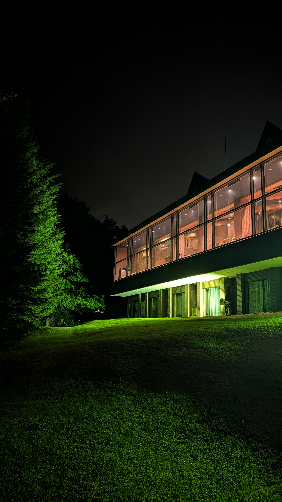
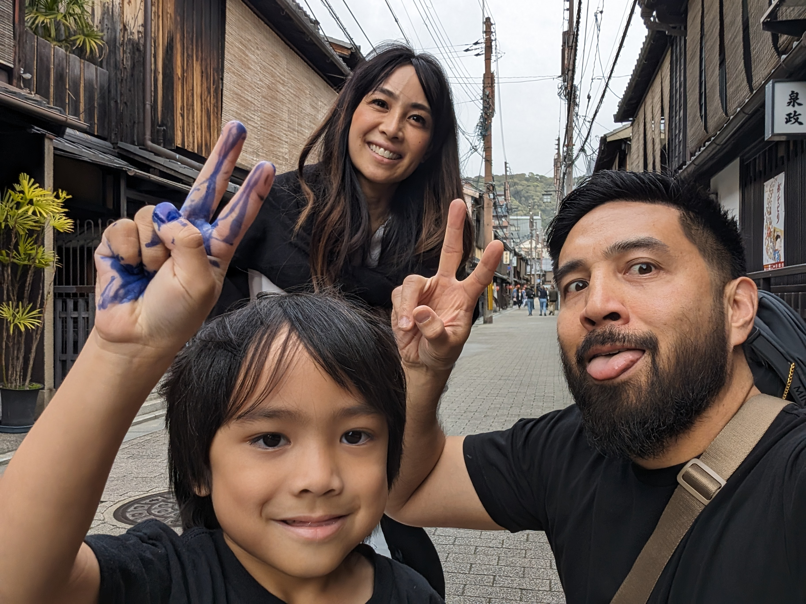
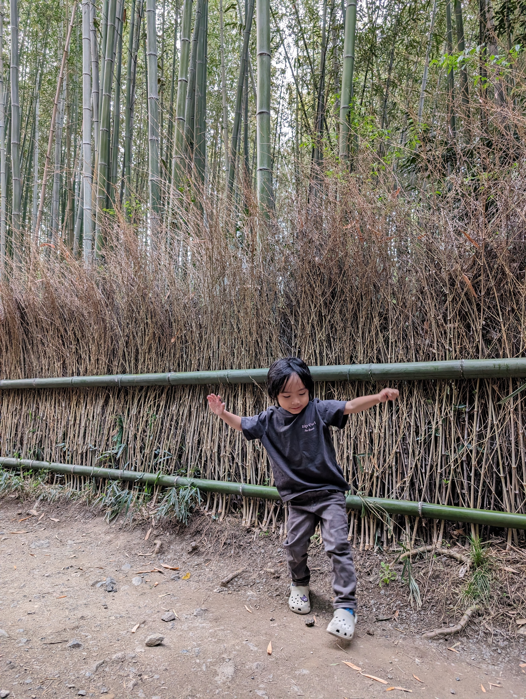
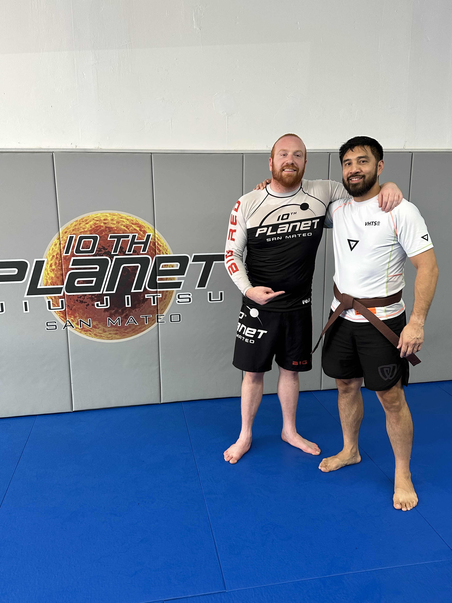
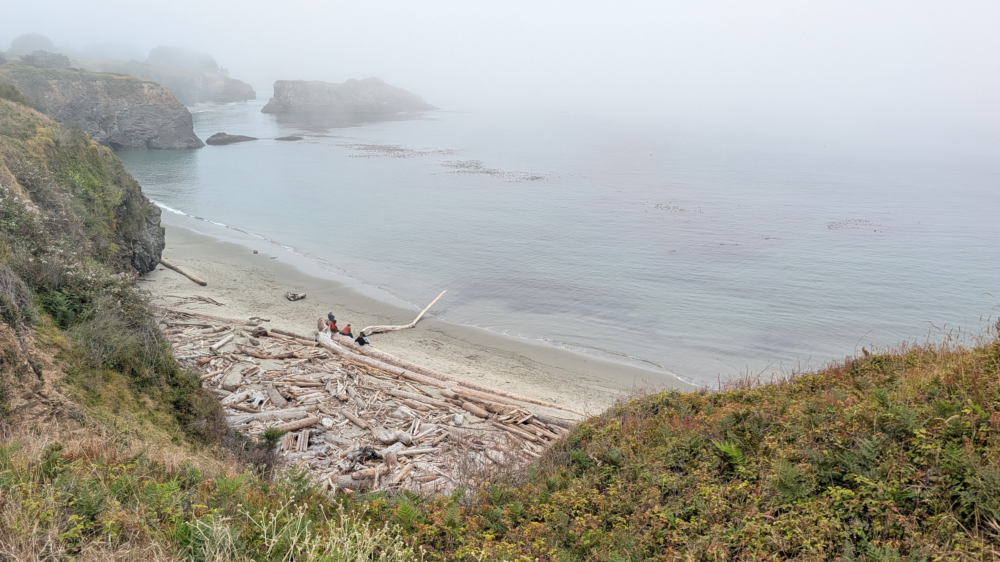
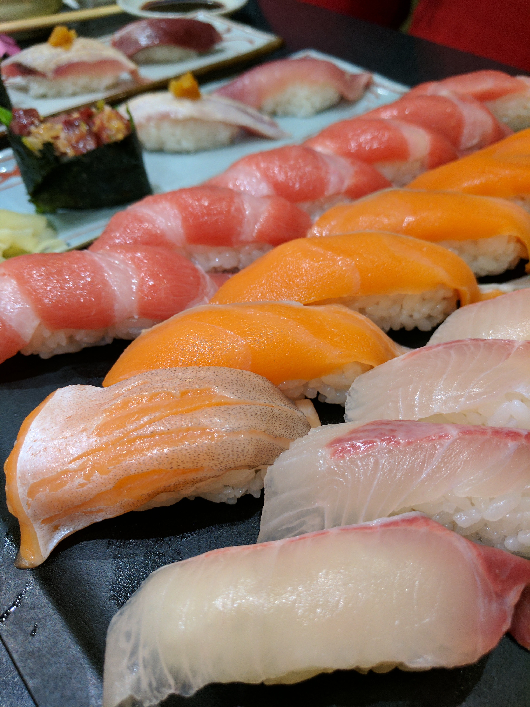
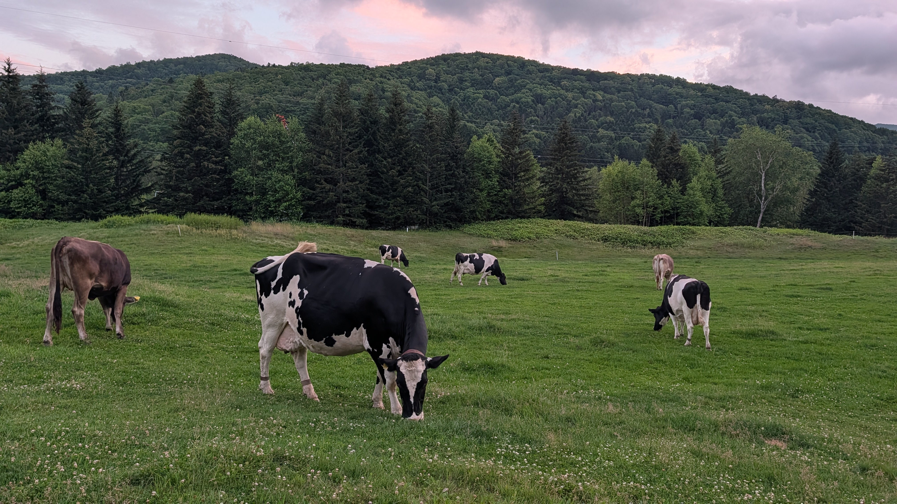
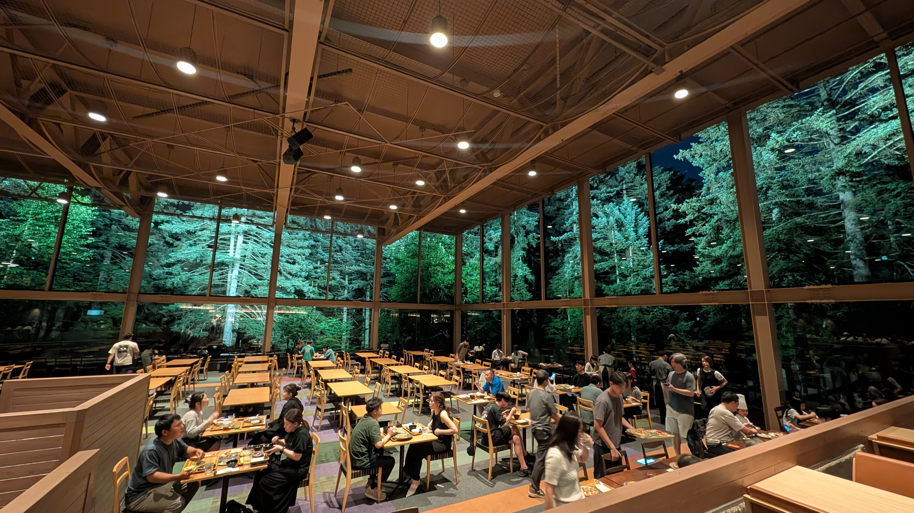

I design multimodal experiences that feel human — from Gemini on glasses to voice identity across Google. Across DeepMind, Assistant, and YouTube, I've made emerging tech intuitive for everyone, not just the default user, including users in Emerging Markets. Technology has never been more accessible than now, when it can finally speak and listen back.
The scale of my projects required convincing people I had no authority over — engineers, partner organizations, and executives. I argued YouTube's leadership out of a feed pattern that risked their north-star metric, consolidated six partner teams onto a single consent, and got tool owners to adopt a spec that improved those tools everywhere, not just on glasses. The mic behavior I designed for a screenless device became Gemini Live's default across every surface it runs on.
Outside of work — a brown belt in jiu-jitsu, a published children's book, and exactly one gorilla on this website.







